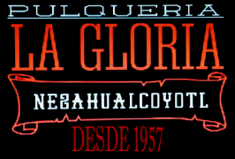
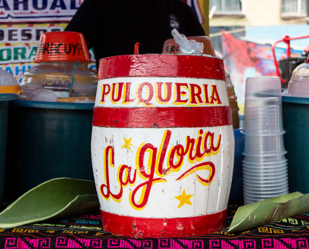
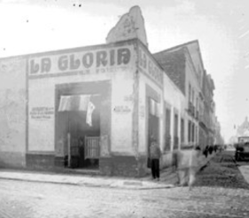
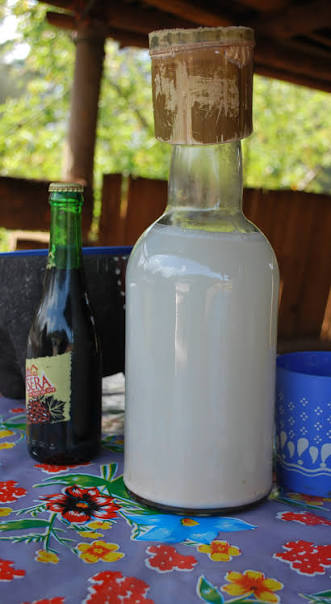
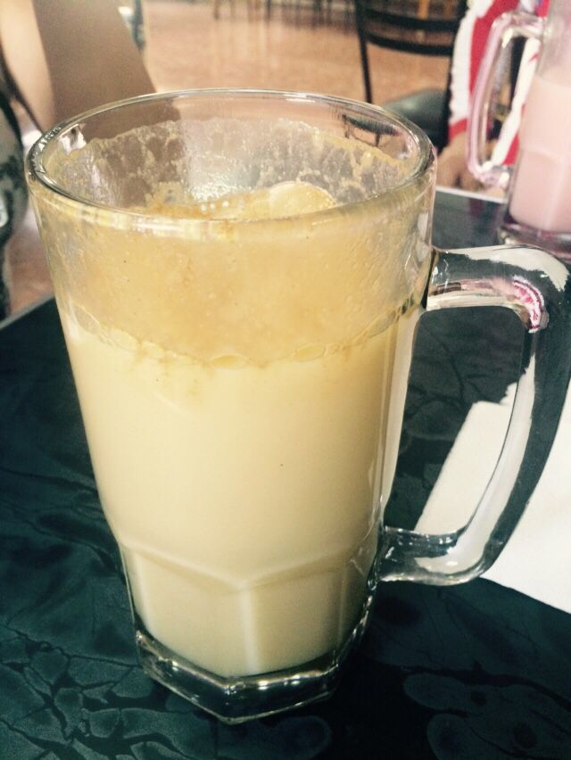
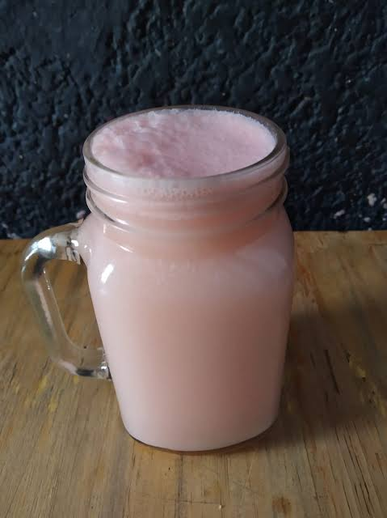
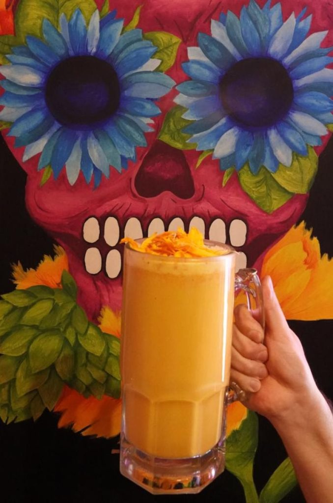

Tradición viva, sabor artesanal y cultura popular desde 1957
En Pulquería La Gloria preservamos el oficio ancestral del pulque natural y los curados artesanales preparados al momento con fruta fresca y semillas seleccionadas.
Más que un expendio, somos un punto de encuentro comunitario en Ciudad Nezahualcóyotl donde cada jícara cuenta más de seis décadas de historia.
Animación 3D desarrollada en Blender — Identidad visual La Gloria

Barril tradicional de madera curada en nuestro local
Más de 65 años acompañando a Nezahualcóyotl

Archivo fotográfico del establecimiento
Fundada en 1957, La Gloria nació como un espacio familiar dedicado a traer aguamiel y pulque fino directamente desde los tinacales de la región.
A lo largo de tres generaciones hemos mantenido intactas las recetas de nuestros curados clásicos, adaptándonos a los nuevos tiempos sin perder la esencia de las pulquerías tradicionales.
Relato y ambiente de Pulquería La Gloria
Del maguey y el tlachiquero hasta tu tarro
El pulque es una bebida fermentada de origen prehispánico obtenida del corazón del maguey pulquero (Agave salmiana). Su extracción requiere paciencia y conocimiento técnico: el raspado del cajete para obtener el aguamiel y su posterior fermentación controlada en el tinacal.
En este video te mostramos cómo se prepara, conserva y sirve correctamente un buen pulque fresco para mantener su textura y propiedades naturales.
Video documental: Proceso y servicio en La Gloria
Pulque natural y curados especiales de la casa

Fresco del día, de consistencia equilibrada y fermentación artesanal.

Cremoso, preparado con avena tostada, canela y un toque ligero de piloncillo.

Especialidad de la casa elaborado con piñón rosa natural de temporada.

Guayaba, mango, fresa y apio preparados al momento con fruta fresca.
Te esperamos con la jícara llena
Dirección: Ciudad Nezahualcóyotl, Estado de México
Horario: Lunes a Domingo de 11:00 a 20:00 hrs
Pedidos y eventos: contacto@pulquerialagloria.mx